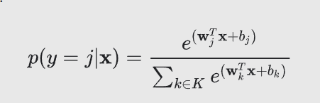
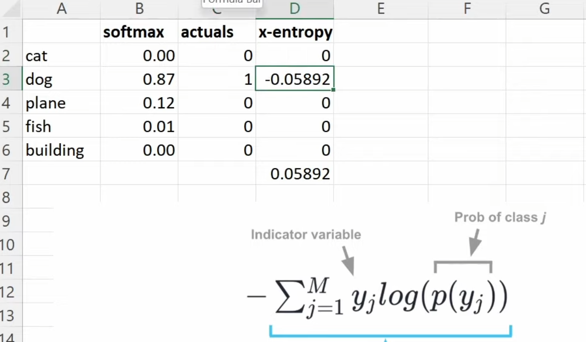

Video 7 is now complete. It’s a bit of grab bag but here are some of the coolest bits that stuck with me:
Gradient Accumulation
Also known as “don’t do the gradient step immediately after you feed a batch through the GPU”. Instead, feed in part of a batch, then add the effect of that partial batch to the gradients (i.e. accumulate). Then repeat until you have completed all pieces of your batch, then do the gradient step as normal.
Why? Because you can fit effectively an infinite batch size into GPU memory this way. There do seem to be some caveats with some model types, but for the stuff we’ve been doing, it should be mathematically equivalent.
Predicting Two Things
We did the ‘rice paddy’ example but this time tried to predict both the type of rice variety as well as the disease. A “mind blown” moment was when Jeremy said we’re not actually going from one prediction to two: we’re going from 10 (diseases) to 20 (diseases + varieties).
There we some other neat learnings in pulling this off too. We needed to examine the loss function more closely. Before, we had let fastai give us a default function of ‘cross entropy’. We just kind of ignored that something like mean squared error wouldn’t work when there are 10 labels to predict (not one).
Softmax and Cross-Entropy
These seemed confusing at first, but ultimately ended up being “raise e to the power of the output value”, then “divide by the sum of all of these”. These values can then be treated as probabilities, with the added bonus that the process tends to push one prediction to the top.

Cross-entropy then ends up being the case where you just take the (negative) softmax of the prediction for the label that was actually correct. But what’s neat is that this “look up the prediction for the correct label” gets expressed as “add up a one-hot vector times all the predictions”.

Collaborative Filtering and Latent Factors
Another surprising thing was the idea of collaborative filtering on very basic datasets. We looked at movie reviews and posited that it would be useful to be able to compare features of a movie to a user’s preferences. The problem is we don’t have any of that data.
What’s neat is that it doesn’t matter! We can look at patterns of users and the ratings for movies that we do have and just… pretend that such features exist. We call ’em “latent factors”, and we can do some fitting to get values for those latent factors that work.
Weird bit: what does those factors actually represent? Probably nothing meaningful in the real world. I imagine you can’t map one of them to genre or release date for instance.
Embeddings
Embeddings are another ‘fancy term for something basic’, as it turns out to just mean “look something up in an array”. In this case, we made an embedding for the user latent factors and another for the movie latent factors. We ended up with a table of users where the extra columns were the latent factors, and similarly for the movies. To make a prediction of a particular user and a particular movie, we needed to ‘look up’ the latent factors for that user and take the dot product of them with the latent factors of that particular movie (which also needed to be looked up).
Weight decay and L2 Regularization
If we incorporate the sum of the magnitudes of all the weights as part of the loss function, we can encourage the learning process to favor weights with smaller overall magnitudes. That’s cool, because it will make the model less prone to overfitting, as the weights can’t influence the output so radically that the function has really steep slopes on it.
I tried adding this to my Spaceship Titanic competition entry and it improved things by a little bit, putting me near the top 500. Cool.
What’s super important to remember is that weight decay is useful and effective, AND it’s something that fastai can’t meaningfully guess at when doing tabular learning or collaborative filtering (whereas it can and does for vision applications). Therefore, we have to play around with adding it ourselves.
Today’s Concerns
Q: How many latent factors should we use?
A: There’s a formula that fastai uses that gives a good rule of thumb. And it comes from Jeremy inventing a function that fits his intuition that he wrote down for various problem sizes. This has even been (apparently) cited in papers.
What the heck, data science. That’s the kind of lack of rigor or rationale that’s just infuriating.